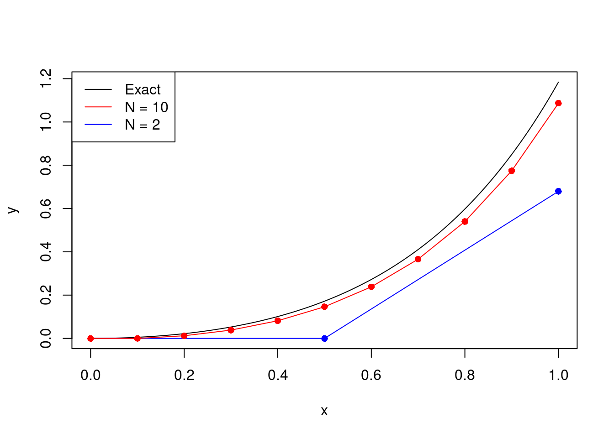
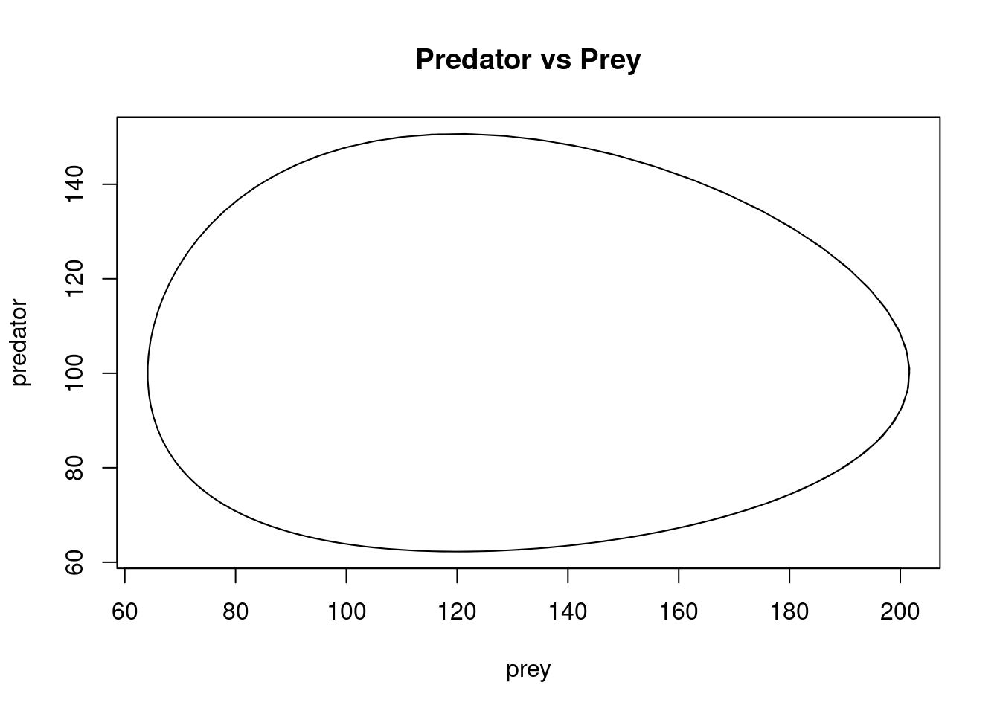
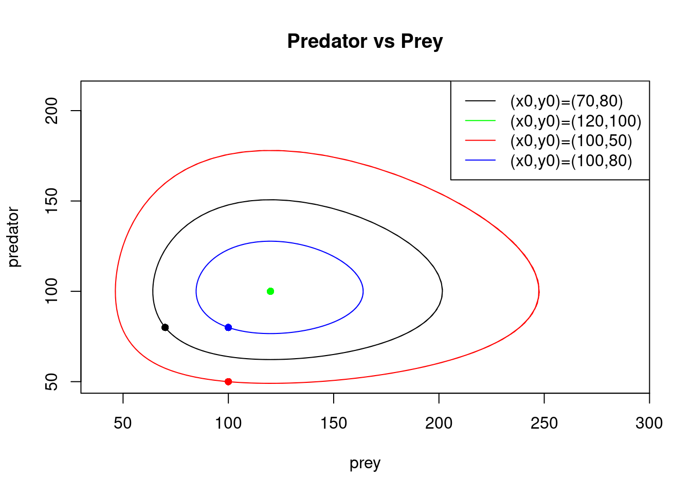

10 Ordinary differential equations
10.1 Numerical integration
We will start with a particular type of differential equation, where the right hand side of the equations only depends on \(x\). The problem becomes to find \(y: [a,b] \to \mathbb{R}\) satisfying \[ \frac{dy}{dx} = f(x) \] with initial condition \(y(a) = y_0\).
By the fundamental theorem of calculus, we know that \[ y(x) = y_0 + \int_a^x f(t)dt. \] There are many cases in which this integral cannot be evaluated explicitly. For example, if \(f(x)=e^{-x^2}\) no closed form solution exists. We therefore need to develop a method for computing integrals numerically. Note that we already looked into a method to estimate integrals numerically: Monte Carlo methods! Here we will present deterministic methods to approximate integrals, because Monte Carlo methods would be difficult to apply in the general case where the right hand side of the equations is a function of both \(x\) and \(y\).
A common approach to this problem is to find an approximation to \(\int_a^b f(t) dt\) which has a small error when \(b-a\) is small. If we then need to evaluate an integral on a larger interval \([a,b]\), we can split it into several small intervals and use the approximation on each of these small intervals.
10.1.1 Riemann integration
To illustrate the general approach, we will approximate the area under the curve of the function \(f:[a,b] \to \mathbb{R}\) by a rectangle with height \(f(a)\) and width \(b-a\), so \[ \int_a^b f(x) dx \approx f(a)(b-a). \] How accurate is this approximation? Let \(I = \int_a^b f(x) dx\) and \(\hat{I} = f(a)(b-a)\). We compute the error \[\begin{align*} I-\hat{I} &= \int_a^b (f(x)-f(a)) dx \\ &=\int_0^{b-a} (f(a+h)-f(a)) dh \\ &=\int_0^{b-a} f'(c_h)h dh \end{align*}\] for some \(c_h \in (a,a+h)\). Here we have used the mean value theorem. In doing so, we needed to make the assumption that \(f\) was differentiable. Throughout the remainder of this chapter we will assume, without explicitly stating it, that \(f\) is sufficiently differentiable for our needs.
It follows that \[ |I - \hat{I}| \leq \sup_{x \in [a,b]} |f'(x)| \int_0^{b-a} h dh = \frac{(b-a)^2 \sup_{x \in [a,b]}|f'(x)|}{2}. \] So \(I - \hat{I} = O((b-a)^2)\) when \(b-a\) is small. We refer to this as the local truncation error.
Now suppose we wish to evaluate the integral \(I=\int_a^b f(x) dx\) when \(b-a\) is no longer small. We split \([a,b]\) into \(N\) smaller intervals, each with length \(h=(b-a)/N\). Let \(x_i = a + ih\), \(i=0, \dots, N\). Then \[ I = \sum_{i=1}^N \int_{x_{i-1}}^{x_i} f(x) dx \approx \sum_{i=1}^N f(x_{i-1})(x_{i}-x_{i-1}) = h\sum_{i=1}^N f(x_{i-1}). \] Setting \[ \hat{I}_N = h\sum_{i=1}^N f(x_{i-1}), \] one can easily obtain a bound on the global truncation error \[\begin{align*} |I-\hat{I}_N| &\leq \sum_{i=1}^N \left | \int_{x_{i-1}}^{x_i} f(x) dx - f(x_{i-1})(x_i-x_{i-1}) \right | \\ & \leq \frac{N h^2 \sup_{x \in [a,b]}|f'(x)|}{2} \\ &= \frac{(b-a)^2 \sup_{x \in [a,b]}|f'(x)|}{2N}, \end{align*}\] so the global truncation error, with \(N\) steps, is of size \(O(N^{-1})\) for large \(N\). The step size \(h\) and the total number of steps \(N\) are related by \(Nh = b-a\). So one could equivalently say that the global truncation error with step size \(h\) is \(O(h)\) for \(h\) small.
In order to obtain a global truncation error of less than \(\epsilon\), one would need to take \[ N \geq \frac{(b-a)^2 \sup_{x \in [a,b]}|f'(x)|}{2 \epsilon}, \] so an algorithm which computes a numerical estimate of \(\int_a^b f(x) dx\) in this way will have complexity \(O(\epsilon^{-1})\) for small \(\epsilon\).
We say that an algorithm of this type is \(p^{th}\) order if the global truncation error with step-size \(h\) is \(O(h^p)\). The following statements are all equivalent for numerical integration methods of this form.
- An algorithm is \(p^{th}\) order.
- The local truncation error on a small interval \([a,b]\) is \(O((b-a)^{p+1})\).
- The global truncation error with \(N\) steps is \(O(N^{-p})\).
- The complexity of an algorithm with global truncation error \(\epsilon\) is \(O(\epsilon^{-1/p})\).
The higher the order, the more accurate (for a given number of steps) or faster (for a given degree of accuracy) the algorithm.
10.1.2 Midpoint rule
The midpoint rule approximates the area under the curve of the function \(f:[a,b] \to \mathbb{R}\) is approximated by a rectangle with height \(f((a+b)/2)\) and width \(b-a\) i.e. the midpoint of the interval is used to determine the height of the rectangle.
Using Taylor’s Theorem to second order, with Lagrange remainder, this gives the local truncation error \[\begin{align*} I-\hat{I} &= \int_a^b \left (f(x) - f\left(\frac{a+b}{2} \right ) \right ) dx \\ &= \int_{-(a+b)/2}^{(a+b)/2} \left (f\left (\frac{a+b}{2}+h\right ) - f\left (\frac{a+b}{2} \right ) \right ) dh \\ &= \int_{-(a+b)/2}^{(a+b)/2} \left (f'\left(\frac{a+b}{2}\right)h + \frac{1}{2}f''(c_h)h^2 \right ) dh \\ &= \left [ f'\left(\frac{a+b}{2}\right) \frac{h^2}{2} \right ]_{-(a+b)/2}^{(a+b)/2} + \int_{-(a+b)/2}^{(a+b)/2} \frac{h^2f''(c_h)}{2} dh \\ &= 0 + \int_{-(a+b)/2}^{(a+b)/2} \frac{h^2f''(c_h)}{2} dh. \end{align*}\] It follows that \[ |I-\hat{I}| \leq \sup_{x \in [a,b]}|f''(x)| \int_0^{(b-a)/2} h^2 dh = \frac{(b-a)^3 \sup_{x \in [a,b]}|f''(x)|}{24}, \] so the local truncation error is \(O((b-a)^3)\) for small \(b-a\).
To evaluate the integral \(I=\int_a^b f(x) dx\) when \(b-a\), we split \([a,b]\) into \(N\) smaller intervals as before. For \(h=(b-a)/N\), let \(x_i = a + ih\), \(i=0, \dots, N\) and define the midpoints \(y_i=(x_{i-1}+x_i)/2 = a +(2i-1)h/2\). Then \(I\) is approximated by \[ \hat{I}_N = h\sum_{i=1}^N f(y_i) \] and the global truncation error \[ |I-\hat{I}_N| \leq \frac{N h^3 \sup_{x \in [a,b]}|f''(x)|}{24} = \frac{(b-a)^3 \sup_{x \in [a,b]}|f'(x)|}{24N^2}. \] The global truncation error, with \(N\) steps, is therefore of size \(O(N^{-2})\) for large \(N\) so this is a \(2^{nd}\) order algorithm.
10.1.3 Trapezium rule
The trapezium rule approximates the area under the curve of the function \(f:[a,b] \to \mathbb{R}\) by a trapezium with width \(b-a\) and parallel sides of length \(f(a)\) and \(f(b)\). So \[ \int_a^b f(x) dx \approx \frac{1}{2}(f(a)+f(b))(b-a). \] It can be shown that the local truncation error is bounded by \[ \frac{(b-a)^3 \sup_{x \in [a,b]}|f''(x)|}{12}. \] Now split \([a,b]\) into \(N\) small intervals. As before, for \(h=(b-a)/N\), let \(x_i = a + ih\), \(i=0, \dots, N\). Then \[ I \approx \frac{h}{2}\sum_{i=1}^N (f(x_{i-1})+f(x_{i}))= \frac{h}{2} \left ( f(a) + 2\sum_{i=1}^{N-1} f(x_i) + f(b) \right ). \] This algorithm is of \(2^{nd}\) order, the same order as the midpoint method.
10.1.4 Simpson’s rule
Simpson’s rule approximates the area under the curve of the function \(f:[a,b] \to \mathbb{R}\) by the area under a quadratic function which passes through the points \((a,f(a))\), \(((a+b)/2, f((a+b)/2))\) and \((b,f(b))\). This quadratic is given by \[ q(x) = \frac{2}{(b-a)^2}\left ( (x-b)\left (x-\frac{a+b}{2} \right )f(a) - 2(x-a)(x-b)f\left (\frac{a+b}{2} \right ) + (x-a)\left (x-\frac{a+b}{2} \right )f(b)\right ). \] Integrating this expression between \(a\) and \(b\) gives \[ \int_a^b f(x) dx \approx \int_a^b q(x) dx = \frac{b-a}{6}\left(f(a)+4f\left ( \frac{a+b}{2} \right )+ f(b)\right). \] It can be shown that the local truncation error is bounded by \[ \frac{2(b-a)^5 \sup_{x \in [a,b]}|f^{(4)}(x)|}{45}. \] Now split \([a,b]\) into \(N\) small intervals. As before, for \(h=(b-a)/N\), let \(x_i = a + ih\), \(i=0, \dots, N\) and define the midpoints \(y_i=(x_{i-1}+x_i)/2 = a +(2i-1)h/2\). Then \[ I \approx \frac{h}{6}\sum_{i=1}^N (f(x_{i-1})+4f(y_i)+f(x_{i})) = \frac{h}{6} \left ( f(a) + 4 \sum_{i=1}^{N} f(y_i) + 2\sum_{i=1}^{N-1} f(x_i) + f(b)\right ). \] This is a \(4^{th}\) order algorithm, and so is the most accurate of those described above.
In all of these methods we have split \([a,b]\) into equal sized intervals. This is not necessary, and in fact many algorithms have adaptive step sizes which use narrow intervals when the function has a steep gradient and wide step sizes when the function is flatter.
10.2 Ordinary differential equations
Suppose now that we need to find \(y: [a,b] \to \mathbb{R}\) satisfying the ordinary differential equation (ODE) \[\begin{equation} \frac{dy}{dx} = f(x,y) \end{equation}\] with initial condition \(y(a) = y_0\).
As before, the fundamental theorem of calculus tells us that \(y\) satisfies \[\begin{equation} y(x) = y_0 + \int_a^x f(t,y(t))dt. \end{equation}\] However, as \(y\) appears on both sides of the equation, this expression does not give us the function \(y(x)\) explicitly. It merely allows us to verify whether a particular function \(y:[a,b] \to \mathbb{R}\) is a solution.
Solving ODEs explicitly is generally difficult. In simple cases, for example when \(f\) is a linear function of \(y\), methods exist. However, when tackling problems that arise from real-world applications it is often necessary to resort to numerical methods.
Here it becomes clear why a Monte Carlo method for numerical integration would be difficult to apply. In order to evaluate the function \(f(t,y(t)\) for samples of \(t\) in the interval \([a,x]\), we would need to know \(y(t)\), but we do not have an easy way to write an equation for \(y(t)\) with random samples.
10.2.1 Existence and uniqueness
Before we start to explore numerical methods for solving ODEs, it is worth asking whether a solution the equation exists at all, and if so whether it is unique.
Define a function \(F:C^0[a,b] \to C^0[a,b]\) by \[ (F(g))(x) = y_0 + \int_{a}^x f(t,g(t)) dt. \] This is a function on a space of functions i.e. \(F\) maps a function \(g:[a,b] \to \mathbb{R}\) to another function \(F(g) : [a,b] \to \mathbb{R}\), where \(F(g)\) maps each \(x \in [a,b]\) to the real value given by the formula for \((F(g))(x)\) above.
Observe that \(y\) is a solution of the ODE if and only if \(F(y)=y\). So solving the differential equation is equivalent to finding a fixed point for \(F\).
Suppose that \(f(t,x)\) is a Lipschitz function in \(x\) with a Lipschitz constant that doesn’t depend on \(t\) i.e. there exists some \(K > 0\) such that, for all \(t \in [a,b]\) and \(x_1, x_2 \in \mathbb{R}\), \[\begin{equation} |f(t,x_1) - f(t,x_2)| \leq K|x_1-x_2|. \end{equation}\] Then \[\begin{align*} |(F(g_1))(x) - (F(g_2))(x)| &\leq \int_a^x |f(t,g_1(t))-f(t,g_2(t))| dt \\ &\leq K \int_a^x |g_1(t)-g_2(t)| dt \\ &\leq K(x-a)\|g_1-g_2\|_\infty. \end{align*}\] Hence \[ \|F(g_1)-F(g_2)\|_\infty \leq K(b-a) \|g_1 - g_2\|_\infty. \] It follows that \(F\) is a contraction mapping on \(C^0[a,b]\) if \(K(b-a) < 1\).
A version of the Contraction Mapping Theorem exists for functions on \(C^0[a,b]\). If \(b-a < 1/K\), one therefore gets that there exists a unique solution satisfying \(y(a)=y_0\).
If \(b-a \geq 1/K\), one still gets that \(F\) has a unique fixed point but only by restricting to functions defined on the smaller interval \([a,\tilde{b}]\) where \(\tilde{b}-a < 1/K\). Taking \(\tilde{b}=a+1/(2K)\), there exists a unique \(y^0:[a,a+1/(2K)]\) satisfying the equation with \(y^0(a)=y_0\). Let \(y_1 = y^0(a+1/(2K))\). An identical argument shows that there exists a unique \(y^1:[a+1/(2K), a+1/K]\) satisfying the equation with \(y^1(a+1/(2K))=y_1\). Set \[ y(x) = \begin{cases} y^0(x) \ \mbox{ if } \ x \in [a,a+1/(2K)] \\ y^1(x) \ \mbox{ if } \ x \in (a+1/(2K), a+ 1/K]. \end{cases} \] Then \(y:[a,a+1/K] \to \mathbb{R}\) is the unique solution to the equation with \(y(a)=y_0\). One can continue to extend the domain of \(y\) in this way up to \([a,b]\).
10.2.2 Euler’s method
Euler’s method is a simple method for obtaining the solution to an ODE numerically. It is based on the Riemann integration method we discussed above.
Split \([a,b]\) into \(N\) smaller intervals, each with length \(h=(b-a)/N\) and let \(x_i = a + ih\), \(i=0, \dots, N\). We recursively obtain approximations \(\hat{y}_i\) to \(y(x_i)\) using the Riemann approximation as follows.
- Set \(\hat{y}_0 = y_0 = y(x_0)\). (At this step, our approximation is exact).
- By Riemann approximation, \[ y(x_1) = y_0 + \int_{x_{0}}^{x_1} f(t,y(t)) dt \approx y(x_0)+h f(x_0,y(x_0)) = \hat{y}_0 + h f(x_0, \hat{y}_0). \] Set \(\hat{y}_1 = \hat{y}_0+h f(x_0, \hat{y}_0)\).
- By Riemann approximation, \[\begin{align*} y(x_2) &= y_0 + \int_{x_{0}}^{x_2} f(t,y(t)) dt \\ &\approx y(x_0) + h \left ( f(x_0,y(x_0)) + f(x_1,y(x_1))\right ) \\ &\approx \hat{y}_0 + h \left ( f(x_0, \hat{y}_0) + f(x_1, \hat{y}_1)\right ) \\ &= \hat{y_1} + h f(x_1, \hat{y}_1). \end{align*}\] Set \(\hat{y}_2 = \hat{y}_1 + h f(x_1, \hat{y}_1)\).
- Continue in this way, at step \(i+1\) setting \[ \hat{y}_{i+1} = \hat{y}_{i} + hf(x_i, \hat{y}_i). \]
Example 10.1 Consider the ODE \[ \frac{dy}{dx} = x \exp (2 x) - 3 y, \] for \(x \in [0,1]\), with initial condition \(y(0)=0\).
This ODE can be solved exactly using integrating factors to give \[ y(x) = \frac{5x-1}{25} \exp (2x) + \frac{1}{25}\exp(-3x), \] (check this!), which provides an exact solution to compare our numerical solutions against.
We next code up Euler’s method:
R
# euler(f, a, b, y0, N) computes the vector hat_y which approximates the
# solution to the ODE y' = f(x,y) on [a,b] with initial condition y(a)=y0.
# It uses step-size h=(b-a)/N so hat_y[i] approximates y(a + (i-1)h).
euler = function(f, a, b, y0, N){
h = (b-a)/N
x_seq = seq(a, b, h)
hat_y = rep(y0, N+1)
for (i in 1:N){
hat_y[i+1] = hat_y[i] + h*f(x_seq[i], hat_y[i])
}
return(list(x=x_seq, y=hat_y))
}Python
import numpy as np
def euler(f,a,b,y0,N):
h = (b-a)/N
#from a to b in steps of h
x_seq = np.arange(a,b,h)
#Initial value y0
hat_y = y0*np.ones(N+1) #N+1 values
for i in range(1,N):
hat_y[i+1] = hat_y[i] + h*f(x_seq[i],hat_y[i])
return x_seq,hat_yIn order to solve the ODE above, we need to implement the Euler method with \[ f(x,y) = x \exp (2 x) - 3 y \] We compare it with the exact solution, taking \(N=2\).
R
f = function(x, y){
x*exp(2*x) - 3*y
}
yexact = function(x){
(5*x - 1)*exp(2*x)/25 + exp(-3*x)/25
}
print(euler(f, 0, 1, 0, 2))## $x
## [1] 0.0 0.5 1.0
##
## $y
## [1] 0.0000000 0.0000000 0.6795705print(yexact(c(0, 0.5, 1)))## [1] 0.0000000 0.1720221 1.1842405Python
def f(x,y):
return x*np.exp(2*x) - 3*y
def yexact(x):
return (5*x-1)*np.exp(2*x)/25 + np.exp(-3*x)/25
print(euler(f,0,1,0,2))## (array([0. , 0.5]), array([0. , 0. , 0.67957046]))print([yexact(x) for x in [0,0.5,1]])## [0.0, 0.1720221161134799, 1.1842404585636186]As expected, \(N=2\) performs badly. The graph below shows that the approximation is more reasonable when taking \(N=10\).

In real-world applications there is often a trade-off between accuracy, complexity, robustness and stability. When deciding between algorithms, and the values of parameters such as the step size, one should always take into consideration what is important for that particular application. Is it essential that it is fast, or is it more important that it is accurate? Do you need to ensure it is stable for many different inputs, or does it just need to work for one specific set of parameters? There is very rarely a single perfect way to do things, but there are lots of ways to do things badly!
10.3 Higher order methods
Euler’s method is an order 1 method for solving ODEs numerically, based on the order 1 Riemann integration method for doing numerical integration. The low accuracy and poor stability that we saw above means that the Euler method is not used much in practice for solving ODEs. However, we can obtain higher order methods for solving ODEs, by basing them on the corresponding higher order methods for doing numerical integration.
10.3.1 Midpoint method
The midpoint method is a modification of the Euler method based on the midpoint rule. As before, split \([a,b]\) into \(N\) smaller intervals, each with length \(h=(b-a)/N\). Let \(x_i = a + ih\), \(i=0, \dots, N\), and \(t_i=(x_{i-1}+x_i)/2 = a + (2i-1)h/2\) for \(i=1, \dots N\). We would like to recursively obtain approximations \(\hat{y}_i\) to \(y(x_i)\) using the midpoint rule approximation in the same way as we did for the Euler rule i.e.
- Set \(\hat{y}_0 = y_0 = y(x_0)\).
- By the midpoint rule, \[\begin{equation} y(x_1) = y_0 + \int_{x_{0}}^{x_1} f(t,y(t)) dt \approx y(x_0)+h f(t_1,y(t_1)). \tag{10.1} \end{equation}\]
The trouble is that this time we don’t already have an approximation for \(y(t_1)\). We therefore use the standard Euler method (with step-size \(h/2\)) to approximate \(y(t_1) \approx \hat{y}_0 + h f(x_0, \hat{y}_0)/2 = w_1\). We then substitute this to get \[ \hat{y}_1 = \hat{y}_0 + hf\left (t_1, w_1 \right ). \]
Even though it this methods requires two computations at each step, where Euler’s method only needed one, the error decreases much faster as \(h \to 0\), so fewer steps are needed to achieve the same accuracy.
10.3.2 Modified Euler method
The modified Euler method (also called Heun’s method) is based on the Trapezium rule. We would like to approximate \(y(x_1)\) by \[\begin{equation} y(x_1) = y_0 + \int_{x_{0}}^{x_1} f(t,y(t)) dt \approx y(x_0)+\frac{h}{2} \left ( f(x_0,y(x_0)) + f(x_1,y(x_1)) \right ) \tag{10.2} \end{equation}\] but, as with the midpoint rule, we don’t already have an approximation for \(y(x_1)\). We therefore use the standard Euler method to approximate \(y(x_1) \approx \hat{y}_0 + h f(x_0, \hat{y}_0) = \tilde{y}_1\) and substitute this to get \[ \hat{y}_1 = \hat{y}_0 + \frac{h}{2}\left ( f(x_0, \hat{y}_0) + f(x_1, \tilde{y}_1 ) \right ). \]
This is also an order 2 method.
10.3.3 Runge-Kutta methods
The Runge-Kutta method of order 4 (often referred to as “RK4”) is a \(4^{th}\) order method. Because of its high accuracy it is one of the most commonly used methods for numerically solving ODEs. It is based on Simpson’s Rule which approximates \(y(x_1)\) by \[ y(x_1) = y_0 + \int_{x_{0}}^{x_1} f(t,y(t)) dt \approx y(x_0)+\frac{h}{6} \left ( f(x_0,y(x_0)) +4f(t_1, y(t_1))+ f(x_1,y(x_1)) \right ). \]
The usual notation when implementing RK4 is: Note that
- \(K_1 = hf(x_i, \hat{y}_i) \approx hf(x_{i}, y(x_i))\).
- \(K_2 = hf(x_i+h/2, \hat{y}_i+K_1/2) \approx hf(t_i, y(t_i))\), using the left-point Riemann estimate \[ y(t_i) \approx y(x_i) + \frac{h}{2}f(x_i, y(x_i)). \]
- \(K_3 = hf(x_i+h/2, \hat{y}_i+K_2/2) \approx hf(t_i, y(t_i))\), using the right-point Riemann estimate \[ y(t_i) \approx y(x_i) + \frac{h}{2}f(t_i, y(t_i)). \]
- \(K_4 = hf(x_i + h, \hat{y}_i + K_3) \approx hf(x_{i+1}, y(x_{i+1}))\), using the mid-point Riemann estimate \[ y(x_{i+1})\approx y(x_i) + hf(t_i, y(t_i)). \]
Therefore, \[\begin{align*} \hat{y}_{i+1} &= \hat{y}_i + \frac{1}{6}(K_1 + 2K_2 + 2K_3 + K_4) \\ &\approx y(x_i) + \frac{h}{6}(f(x_i, y(x_i)) + 4f(t_i,y(t_i)) + f(x_{i+1},y(x_{i+1}))), \end{align*}\] which is exactly Simpson’s rule.
10.4 Systems of ODEs
Often we want to solve a system of differential equations of the form \[\begin{align*} \frac{d x_1}{dt} &= f_1(t, x_1, \dots, x_k) \\ \frac{d x_2}{dt} &= f_2(t, x_1, \dots, x_k) \\ \vdots \\ \frac{d x_k}{dt} &= f_k(t, x_1, \dots, x_k) \end{align*}\] for \(t \in [a,b]\) with initial condition \((x_1 (a), x_2 (a), \dots, x_k(a)) =(x_{0,1}, x_{0,2}, \dots, x_{0,k})\).
We can write this in vector notation as \[ \frac{d \mathbf{x}}{dt} = \mathbf{f}(t, \mathbf{x}) \] for \(t \in [a,b]\) with initial condition \(\mathbf{x}(a) = \mathbf{x_0}\). Here \(\mathbf{x}: [a,b] \to \mathbb{R}^k\) and \(\mathbf{f}:[a,b] \times \mathbb{R}^k \to \mathbb{R}^k\).
Remark. We have changed notation in this section to using \(t\) as the independent variable and \(x_1, \dots, x_k\) as the dependent variables. The reason for this is that systems of ODEs often originate as physical models in which the independent variable is time, and the dependant variables represent spatial coordinates. In 2-dimensions, we will usually use \((x,y)\) in place of \((x_1, x_2)\), and in 3-dimensions we will usually use \((x,y,z)\).
Similar conditions to those in the 1-dimensional case are needed to ensure the existence and uniqueness of solutions to the ODE, namely for each \(i=1, \dots, k\), there exists some \(K<\infty\) such that for all \(t \in [a,b]\), \[ |f_i(t,x_1^1, \dots, x_k^1) - f_i(t,x_1^2, \dots, x_k^2)| \leq K\left (|x^1_1 - x^2_1| + \cdots + |x_k^1 - x_k^2| \right ). \] We can write an equivalent statement using vector notation: \[ \|\mathbf{f}(t, \mathbf{x}_1) - \mathbf{f}(t, \mathbf{x}_2)\|_1 \leq K \|\mathbf{x}_1 - \mathbf{x}_2\|_1, \] where \(\|\mathbf{x}\|_1 = |x_1| + \cdots + |x_k|\) for any \(\mathbf{x}=(x_1, \dots, x_k) \in \mathbb{R}^k\).
Exactly the same numerical schemes as in the 1-dimensional case can be used. For example, with the Euler method, the step becomes \[ \hat{\mathbf{x}}_{n+1} = \hat{\mathbf{x}}_n + h \mathbf{f}(t_n, \hat{\mathbf{x}}_n), \] where now (reflecting the change of notation) \(t_i = a + ih\) for \(i=0, \dots, N\).
One can use systems of differential equations to obtain numerical solutions to higher order differential equations. We illustrate the approach with the following example.
Example 10.2 The vertical displacement of a mass on a spring satisfies simple harmonic motion if it is given by the solution to the \(2^{nd}\) order differential equation \[ \frac{d^2x}{dt^2} + \omega^2 x = 0. \] Here, we call \(\omega\) the angular frequency. We shall use the midpoint method to obtain a numerical approximation to \(x(t)\) when \(\omega=1\), for \(t \in [0,2 \pi]\), with initial conditions \(x(0)=0\), \(\frac{dx}{dt}(0) = 1\).
We can solve this particular ODE explicitly to get \[ x(t) = \sin(t). \] This enables us to evaluate the accuracy of our numerical solution.
Set \(y = \frac{dx}{dt}\). Then \((x,y)\) satisfies the following system of first order differential equations \[\begin{align*} \frac{dx}{dt} &= y \\ \frac{dy}{dt} &= -x \end{align*}\] with initial condition \((x(0),y(0))=(0,1)\). So in this case \(\mathbf{f}(t,x,y) = (y,-x)\). We code-up a version of the midpoint method which works with vectors and use it to solve the ODE.
R
# midpoint_system(f, a, b, x0, N) computes the matrix hat_x which approximates
# the solution to the ODE x' = f(t,x) on [a,b] with initial condition x(a)=x0.
# Here t is a scalar in [a,b] and x is a vector with the same dimension as f.
# It uses step-size h=(b-a)/N so hat_x[i,] approximates x(a + (i-1)h).
midpoint_system = function(f, a, b, x0, N){
h = (b-a)/N
time_seq = seq(a, b, h)
hat_x = matrix(0, ncol = length(x0), nrow = (N+1))
hat_x[1,] = x0
for (i in 1:N){
w = hat_x[i,] + h*f(time_seq[i], hat_x[i,])/2
hat_x[i+1,] = hat_x[i,] + h*f(time_seq[i]+h/2, w)
}
return(list(t=time_seq, x=hat_x))
}
# In this function, t is a scalar and x is a 2-dimensional vector
simple_harmonic_f = function(t,x){
c(x[2],-x[1])
}
sol = midpoint_system(simple_harmonic_f, 0, 2*pi, c(0,1), 20)Python
def midpoint_system(f, a, b, x0, N):
h = (b-a)/N
time_seq = np.arange(a, b, h)
hat_x = np.zeros( (N+1,len(x0)) )
hat_x[0,:] = x0
for i in range(1,N):
w = hat_x[i,:] + h*f(time_seq[i], hat_x[i,:])/2
hat_x[i+1,:] = hat_x[i,:] + h*f(time_seq[i]+h/2, w)
return time_seq,x
def simple_harmonic_f(t,x):
return np.array((x[1],-x[0]))
sol = midpoint_system(simple_harmonic_f, 0, 2*np.pi, np.arange(2), 20)Here is a plot of the solution:

10.5 Examples
The examples we have seen so far have been ODEs with analytical solutions. However, the real power of numerical methods for solving ODEs is for systems of equations which do not permit analytical solutions. In this section we finish with some examples of systems of ODEs which arise from modelling real-world scenarios. It is here that we really start to see some of the dramatic effects of instabilities.
10.5.1 SIR epidemic model
The SIR epidemic model is the most studied mathematical model for epidemics. At any point in time, the population splits into three categories:
- Susceptible (S): individuals who have not yet encountered the disease;
- Infective (I): individuals who have the disease and are infectious;
- Removed (R): individuals who have previously had the disease and have either recovered (and are now immune to further infection), or have died.
The model assumes that individuals in the Susceptible category can potentially become infected with the disease by interacting with Infectives at which point they move into the Infective category. Infectives remain infectious for some period of time, the infectious period, before moving into the Removed category by recovering or dying. Once an individual is in the Removed category, they remain there indefinitely. To further simplify, it is assumed that nobody enters or leaves the population during the course of the epidemic. Therefore, if \((S(t), I(t), R(t))\) denotes the number of individuals in each category, \[ S(t)+I(t)+R(t)=S(0)+I(0)+R(0) = N_0 \] for all \(t \geq 0\).
Both deterministic and stochastic (random) versions of the model exist. We will focus on the former here. Let \[ (x(t), y(t), z(t)) = (S(t), I(t),R(t))/N_0 \] denote the density of susceptible, infective and removed individuals at time \(t\), respectively. Since \[ x(t)+y(t)+z(t) = x(0)+y(0)+z(0)=1, \] one can easily recover \(z(t)\) from \(x(t)\) and \(y(t)\) by \[ z(t) = 1- x(t) -y(t). \] Therefore we only need to keep track of the proportions of susceptibles and infectives in the population.
For the deterministic model, We assume that \(N_0\) is so large that \(x(t),y(t),z(t)\) can be viewed as real valued functions. For the disease to spread we require infectives to make contact and pass the disease on to susceptibles. Suppose that individuals make contact at rate \(\beta\). The contact rate between infectives and susceptibles at time \(t\) is then \[ \beta \times y (t) \times x(t). \] This increases the proportion of the population infected whilst decreasing the proportion of the population susceptible. Infective individuals are assumed to recover from the disease at rate \(\gamma\), thus the rate at which recoveries are taking place at time \(t\) is \(\gamma y(t)\). Therefore \((x(t),y(t))\) solve the following ODE system: \[\begin{align*} \frac{dx}{dt} &= - \beta x y =f_1 (t, x,y) \\ \frac{dy}{dt} &= \beta x y - \gamma y = f_2 (t, x,y). \end{align*}\]
These equations are simple to write down and interpret but have no analytical solution, hence the need to use numerical methods.
10.5.2 Predator-prey model
The predator-prey model is also known as the Lotka-Volterra model, after Alfred Lotka and Vito Volterra who introduced and first analysed the model. The model equations appear similar to the SIR epidemic model described above but generate rather different dynamics. Again no analytic solution exists.
The motivation for the model is as follows. There are two types of individuals prey (rabbits) and predators (foxes). (Other prey-predator combinations are also used in the literature.) Let \(x(t)\) and \(y(t)\) denote the density of prey and predators, respectively, at time \(t\). The model assumptions are as follows.
- There is ample food for the prey and in the absence of predators the prey population grows exponentially. That is, the birth rate of new prey at time \(t\) is \(\alpha x(t)\) for some parameter \(\alpha\).
- The predator lives exclusively on the prey so that its birth rate is related to prey numbers. Therefore the birth rate of new predators at time \(t\) is \(\delta x(t) y(t)\) for some parameter \(\delta\). Given that the predator eats the prey, the prey density decreases at rate \(\beta x(t) y(t)\) through the prey being eaten for some parameter \(\beta\).
- Finally, the predators have a finite lifetime and die at rate \(\gamma\) and hence the predator density decreases at rate \(\gamma y(t)\).
Note that often the simplifying assumption \(\delta =\beta\) is made. This corresponds to a one-to-one replacement of prey by predators.
This gives the Lotka-Volterra ODE system \[\begin{align*} \frac{dx}{dt} &= \alpha x - \beta x y \\ \frac{dy}{dt} &= \delta x y - \gamma y. \end{align*}\] Note that if \(\alpha =0\) and \(\delta =\beta\), we recover the SIR epidemic model.
We can use our midpoint_system function to solve the Lotka-Volterra system for different choices of parameters. The Runge-Kutta (RK4) method is more accurate. We leave it as an exercise to adapt this program to use RK4.
R
# lotka_volterra(alpha, beta, gamma, delta, initial, time, steps)
# obtains a numerical solution to the Lotka Volterra equations
# with given parameters alpha, beta, gamma and delta on the interval
# [0, time] with initial values given by the 2-dimensional vector initial.
# steps specifies the number of steps to use in the midpoint method.
# lotka_volterra(0, 1.5, 1, 1.5, c(0.99,0.01), 0.2, 2)$x[,1] gives the answer
# c(0.9900000, 0.9884801, 0.9868876)
lotka_volterra = function(alpha, beta, gamma, delta, initial, time, steps){
# lv_f is the right-hand side in the Lotka-Volterra ODE
# t is a scalar and doesn't explicitly appear as it is time-homogeneous
# x is a 2-dimensional vector
lv_f = function(t,x){
f1 = alpha*x[1] - beta*x[1]*x[2]
f2 = delta*x[1]*x[2] - gamma*x[2]
return(c(f1,f2))
}
return(midpoint_system(lv_f, 0, time, initial, steps))
}Python
def lotka_volterra(alpha, beta, gamma, delta, initial, time, steps):
def lv_f(t,x):
f1 = alpha*x[0] - beta*x[0]*x[1]
f2 = delta*x[0]*x[1] - gamma*x[1]
return np.array([f1,f2])
return midpoint_system(lv_f, 0, time, initial, steps)Suppose that the initial densities of prey and predator are \(x_0 =70\) and \(y_0 =80\) and that the parameters are \(\alpha =1\), \(\beta =0.01\), \(\gamma =0.6\) and \(\delta =0.005\). We estimate the trajectory of prey and predator over the time interval \([0,20]\) using \(N=200\) steps (\(h=0.1\) step size) with the midpoint method and plot the results.

Observe how the densities of predators and prey follow a periodic pattern. One can plot the number of predators against the number of prey so better understand the relationship between the two populations.

We call this shape of trajectory a periodic orbit. We can plot \(y(t)\) against \(x(t)\) for several different starting points. This is called a phase portrait. We illustrate this, taking \((x_0, y_0) = (120,100), (100,50)\) and \((100,80)\), in addition to \((70,80)\) (in all cases for \(t\) on the interval \([0,20]\), using the midpoint method with \(200\) steps). The initial points are marked with dots.

It is straightforward to see that \((x, y) = (\gamma/\delta,\alpha/\beta)\) is a fixed point (equilibrium) of the Lotka-Volterra equations. That is, if \((x_0, y_0) = (\gamma/\delta,\alpha/\beta)\) then for all \(t \geq 0\), \((x(t), y(t)) = (x_0,y_0)\). For the chosen parameter values, this situation arises with \((x_0, y_0) = (120,100)\). The trajectories from the other starting points form cycles around the fixed point \((120,100)\).
By changing the values of \(\alpha, \beta, \gamma\) and \(\delta\), one can obtain different behaviour around the fixed point \((\gamma/\delta,\alpha/\beta)\): the fixed point is a sink if the trajectories from the other starting points converge to it as \(t \to \infty\); it is a source if they diverge from it; and it is a saddle-point if some trajectories converge to it and others diverge from it.
One can also easily check that \((0,0)\) is a fixed point. This is a saddle point. If we start nearby at \((x_0, 0)\), then \((x(t),y(t))=(x_0 e^{\alpha t},0) \to (\infty,0)\) as \(t \to \infty\) i.e. this trajectory diverges from \((0,0)\). Whereas, if we start at \((0,y_0)\), then \((x(t),y(t))=(0, y_0 e^{- \gamma t}) \to (0,0)\) as \(t \to \infty\) i.e. this trajectory converges to \((0,0)\).
The nature of the fixed points has implications for the stability of the system of the differential equations. If a fixed point is a sink, then solutions with nearby initial points are stable; if it is a source then they are unstable. For other types of fixed points, more information is needed in order to decide stability. When solving an ODE near an unstable point, even using a stable algorithm will result in errors being amplified.
10.5.3 The butterfly effect
The term butterfly effect is used in chaos theory to describe the sensitive dependence of non-linear dynamical systems (systems of ODEs) on initial conditions whereby a small change in the initial condition can result in a very large difference at a later time. The phrase is associated with the mathematician Edward Lorenz who gave a talk entitled “Does the flap of a butterfly’s wings in Brazil set off a tornado in Texas?” after he observed that when he rounded the initial data for his weather model, he got significantly different results to when he used unrounded initial data. He entered the initial condition 0.506 from the printout instead of entering the full precision 0.506127 value. The result was a completely different weather scenario.
Lorenz proposed the following model for atmospheric convection, now known as the Lorenz equations \[\begin{align*} \frac{dx}{dt} &= \sigma (y-x) \\ \frac{dy}{dt} &= x (\rho -z) -y \\ \frac{dz}{dt} &= xy -\beta z. \end{align*}\]
By setting the right-hand side to zero, one can easily check that when \(\rho < 1\), there is only one fixed point, at the origin. For \(\rho > 1\), two additional fixed points appear, at \[ \left (\pm \sqrt{\beta(\rho-1)}, \pm \sqrt{\beta(\rho-1)}, \rho -1 \right ). \] For sufficiently small values of \(\rho\) (dependent on \(\sigma\) and \(\beta\)), these points are stable and the trajectories of any non-zero initial values converge to one of them.
Take \(\sigma=10\), \(\beta=8/3\) and \(\rho=14\) with initial condition \((x_0,y_0, z_0)=(-10,-8,29)\). We plot an approximate trajectory of \(z(t)\) against \(x(t)\) for \(t \in [0,100]\) using the midpoint method with step size \(h=0.01\) \((N=10000\) steps). The colours cycle through the rainbow spectrum as \(t\) increases, starting with red when \(t=0\) and changing colour every unit of time.
R
lorenz_solver = function(sigma, beta, rho, initial, time, steps){
lorenz_f = function(t,x){
f1 = sigma*(x[2] - x[1])
f2 = x[1]*(rho - x[3]) - x[2]
f3 = x[1]*x[2] - beta*x[3]
return(c(f1,f2,f3))
}
return(midpoint_system(lorenz_f, 0, time, initial, steps))
}
sol = lorenz_solver(10, 8/3, 14, c(-10,-8,29), 100, 10000)Python
def lorenz_solver(sigma, beta, rho, initial, time, steps):
def lorenz_f(t,x):
f1 = sigma*(x[1] - x[0])
f2 = x[0]*(rho - x[2]) - x[1]
f3 = x[0]*x[1] - beta*x[2]
return np.array((f1,f2,f3))
return midpoint_system(lorenz_f, 0, time, initial, steps))
sol = lorenz_solver(10, 8/3, 14, np.array((-10,-8,29)), 100, 10000)Here is a plot of the solutions:
When \(\rho\) gets large enough, the two points become unstable and the trajectory is repelled by them in a very complex way. Taking the parameters \(\sigma=10\), \(\beta=8/3\) and \(\rho=28\) (which were the parameters that Lorenz used) with initial condition \((x_0,y_0, z_0)=(-10,-8,29)\), we plot an approximate trajectory on \([0,100]\). As before, we use the midpoint method with step size \(h=0.01\) \((N=10000\) steps). Plotting \(z(t)\) against \(x(t)\) reveals … a butterfly!